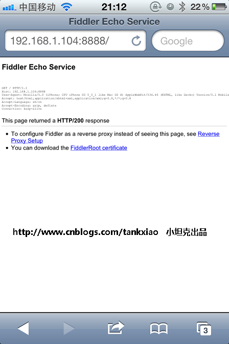

Fiddler绝对称得上是"抓包神器"， Fiddler不但能截获各种浏览器发出的HTTP请求, 也可以截获各种智能手机发出的HTTP/HTTPS请求。
Fiddler能捕获ISO设备发出的请求，比如IPhone, IPad, MacBook. 等等苹果的设备。 同理，也可以截获Andriod，Windows Phone的等设备发出的HTTP/HTTPS。
前提条件：安装Fiddler的机器，跟Iphone 在同一个网络里， 否则IPhone不能把HTTP发送到Fiddler的机器上来。
截获智能手机发出的HTTP包有什么用?
用处一： 手机软件程序员利用Fiddler，可以截获手机发出的HTTP包， 从而调试程序
用处二： 软件测试人员用于测试智能手机上的软件。
用处三： 可以用来在App应用商店中刷排名
配置Fiddler, 允许"远程连接"
打开Fiddler, Tools-> Fiddler Options 。 （配置完后记得要重启Fiddler）.
选中"Decrpt HTTPS traffic", Fiddler就可以截获HTTPS请求
选中"Allow remote computers to connect". 是允许别的机器把HTTP/HTTPS请求发送到Fiddler上来


获取Fiddler所在机器的IP地址
这个简单吧。 我Fidder所在的机器地址是: 192.168.1.104
IPhone上安装Fiddler证书
这一步是为了让Fiddler能捕获HTTPS请求。 如果你只需要截获HTTP请求， 可以忽略这一步
1. 首先要知道Fiddler所在的机器的IP地址： 假如我安装了Fiddler的机器的IP地址是:192.168.1.100
2. 打开IPhone 的Safari, 访问 http://192.168.1.104:8888， 点"FiddlerRoot certificate" 然后安装证书


IPhone上配置Fiddler为代理
打开IPhone, 找到你的网络连接， 打开HTTP代理， 输入Fiddler所在机器的IP地址(比如:192.168.1.104) 以及Fiddler的端口号8888

大功告成，开始抓包
现在IPhone上的应用（比如Safari, Firefox, Itunes, App Store）发出的HTTP/HTTPS都可以被Fiddler获取。
实例： 打开Safari，
1. 输入http://www.cr173.com/z/qvodplayer/. 看看Fiddler能否捕获。
2. 输入https://dynamic.12306.cn/otsweb/ 看看Fiddler能否捕获。
是不是HTTP和HTTPS都截获到了？？？？， 你不但能截获， 还可以下断点，修改Request, 修改Response, Do what you want.
用完了， 记得把IPhone上的Fiddler代理关闭， 以免IPhone上不了网。
只能捕获HTTP,而不能捕获HTTPS的解决办法
有时候会发现， Fiddler 只能捕获IPhone发出得HTTP请求， 而不能捕获HTTPS请求， 原因可能是证书没有安装好。 解决办法是：
1. 先把IPhone上所有的Fiddler证书删除 (拿出IPhone， 点”设置“->“通用”->"描述文件")